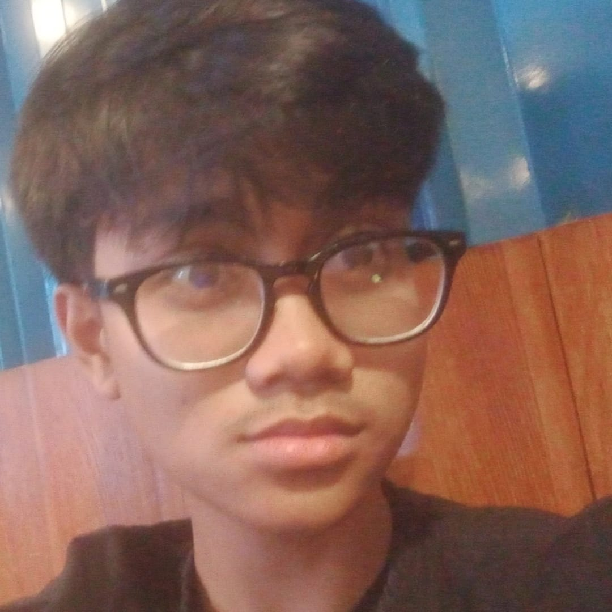
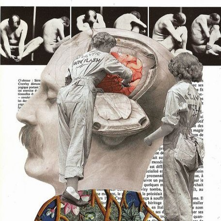

Learn More About Us
Learn more about our journey and values.
Our Story
Satya International School was founded in 2008 by an Indonesian prodigy, Dr. Reigha Ariyasatia Nadika PhD. and his trusted fella Aveyond who are also the founders of Satya Co. with the vision of creating an educational institution that nurtures not only academic excellence but also personal growth and global citizenship. We believe in fostering a community of lifelong learners who strive for excellence, truth, and self-improvement.
Our Mission
At Satya International School, our mission is to guide and inspire students to reach their full potential by providing a nurturing and intellectually stimulating environment. We emphasize critical thinking, creativity, and compassion in every aspect of our curriculum. Our mission to educate future leaders is woven throughout the experience, inspiring every member of our community to strive toward a more just, fair, and promising world.
Our Values
- Truth: We promote honesty and integrity in all endeavors.
- Excellence: We strive for the highest standards in academics and character.
- Community: We value collaboration and respect, fostering a sense of belonging among students, teachers, and families.
Our Vision
Our vision is to cultivate global citizens who are well-prepared to navigate the challenges of the future. We have committed to creating and sustaining the conditions that enable all students to experience an unparalleled educational journey that is intellectually, socially, and personally transformative. From this we hope that students will begin to fashion their lives by gaining a sense of what they want to do with their gifts and talents, assessing their values and interests.